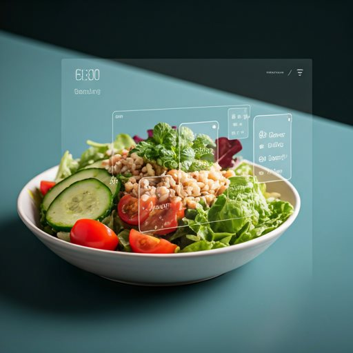
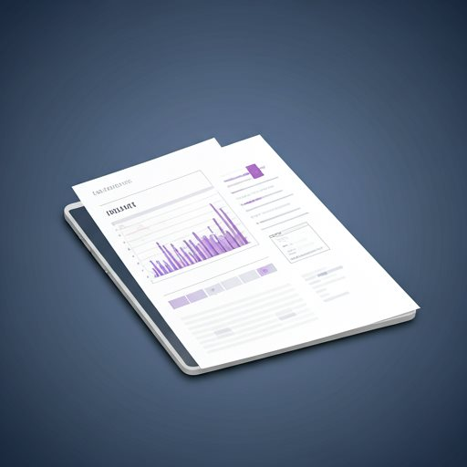

Agente de IA especializado
Fundamentado nas diretrizes ADA, SBD e EASD. Recebe o contexto clínico da pessoa — perfil, faixa alvo, últimas medições, exames — e responde em linguagem de gente. Nunca prescreve, nunca diagnostica, nunca calcula dose.
O Essentius coloca essa rotina em um só lugar: um agente de inteligência artificial que entende os seus dados, um companheiro que evolui com o seu cuidado e uma rede de saúde — farmácia, laboratório, oftalmologia, podologia, nutrição — conectada ao seu dia a dia.
Gratuito no lançamento · Quem chega no começo é Fundador para sempre
Fonte: IDF Diabetes Atlas, 11ª edição (2025), e dados da Federação Internacional de Diabetes sobre gasto em saúde.
A plataforma
A maioria dos aplicativos de diabetes é planilha com outro nome: recebe número e devolve número. O Essentius fecha o ciclo — captura o dado sem esforço, explica o que ele significa, sustenta a motivação e conecta a pessoa a quem pode ajudar.
Fundamentado nas diretrizes ADA, SBD e EASD. Recebe o contexto clínico da pessoa — perfil, faixa alvo, últimas medições, exames — e responde em linguagem de gente. Nunca prescreve, nunca diagnostica, nunca calcula dose.
O motivo número um para largar um app de diabetes é o trabalho de alimentá-lo. A meta de projeto é dois toques por registro — e a refeição se resolve com uma foto, com a confiança da estimativa sempre visível.
Hemoglobina glicada, lipidograma, função renal. O Essentius lê o laudo, compara com o histórico e explica o que mudou — em vez de devolver mais um PDF cheio de siglas que ninguém traduz.
Sensor de glicemia contínua, relógio, balança, medidor. O dado já existe e já é gerado centenas de vezes por semana: o trabalho da plataforma é ler o que existe, não pedir que a pessoa digite tudo de novo.
Uma espécie própria, criada para o Essentius e registrável como propriedade intelectual. Ele ganha energia quando a pessoa se cuida, e o mundo dele evolui junto — nível 1 ao Mestre, com itens, ambientes e conquistas que se acumulam.
Rede privada, moderada, com mentoria de quem convive com diabetes há anos. Porque a parte mais dura raramente é técnica — é não se sentir sozinho às três da manhã.
O ecossistema
Quem vive com diabetes não precisa só de endocrinologista. Precisa de oftalmologista todo ano, de podólogo, de nutricionista, de laboratório, de farmácia toda semana, de atividade física. Hoje essa rede é fragmentada e a pessoa navega sozinha. O Essentius é o ponto onde ela se encontra — e o Essentius sabe onde a pessoa está, o que ela precisa e quando.
A rede de cuidado é local por natureza: a farmácia é a da esquina, o laboratório é o do bairro, o podólogo é o que atende na cidade. A plataforma foi desenhada para conectar cada pessoa a quem realmente pode atendê-la — perto dela.
Quem está há doze meses sem exame de fundo de olho tem uma necessidade concreta. Quem acabou de registrar o último sensor tem outra. O ecossistema responde à rotina real da pessoa — e é isso que o torna valioso para os dois lados.
O usuário alcança benefícios com EssCoins, a moeda que ele ganha se cuidando e que não se compra com dinheiro. O parceiro paga pelo cliente qualificado que chega. A pessoa nunca é espremida — e o dado individual de saúde nunca é o produto.
A jornada
Cada nível desbloqueia itens, ambientes e benefícios reais. Não é enfeite: é a estrutura que transforma uma obrigação clínica diária em algo que a pessoa quer abrir.
O princípio inegociável
“Quanto mais você cuida da sua saúde,
mais o Essentius cuida de você.”
O Essentius recompensa o cuidado, nunca o resultado clínico. A pessoa ganha por ter medido — não por ter medido “bem”. Premiar resultado seria premiar quem teve um dia bom e punir quem está numa fase difícil, que é exatamente quem mais precisa continuar registrando. Nenhuma tela deste produto diz “ruim”. Diz “acima do alvo”, que é fato, não veredito. É por isso que a métrica-mestra do produto é aderência, e não glicemia média.
Sem atrito
Registrar comida é a tarefa que mais faz gente abandonar aplicativo de diabetes. No Essentius a pessoa fotografa o prato: o agente identifica os alimentos, estima os carboidratos e mostra o grau de confiança da estimativa — para ela decidir se aceita, ajusta ou corrige.


O dado já existe
Sensor de glicemia gera centenas de leituras por semana. Exame de sangue vira um arquivo cheio de siglas. O trabalho do Essentius não é pedir que a pessoa digite tudo de novo — é ler o que já existe, cruzar com o histórico e transformar em conversa. E o mesmo material, organizado, vai com ela para a consulta.
Engenharia
Software de saúde não se improvisa. A base do Essentius está em produção com a disciplina de quem sustenta sistema crítico há duas décadas: infraestrutura própria, dado de saúde modelado corretamente e regra clínica dentro do código.
Mercado e modelo
Diabetes não tem alta. É uma condição que exige decisão várias vezes ao dia, todos os dias, pelo resto da vida — e a maior parte dessas decisões acontece longe do consultório, sem nenhum apoio. É por isso que a retenção neste mercado vale mais do que a aquisição.
16,6 milhões de adultos com diabetes no Brasil. A uma assinatura de R$ 9,90/mês, o mercado endereçável só de assinatura no país passa de R$ 1,9 bilhão por ano — antes de qualquer receita de ecossistema. Cálculo ilustrativo sobre a base do IDF Diabetes Atlas 2025.
Lançamento gratuito para formar base e aprender com uso real. Depois, preço de cafezinho: a tese é volume, não margem por usuário. Fundadores mantêm a condição vitalícia — a cobrança futura vira privilégio dos primeiros, não traição.
A linha que cresce até dominar: farmácias, laboratórios, clínicas e profissionais pagam pelo cliente qualificado que chega pela plataforma. Canal de aquisição para eles, benefício real para o usuário, receita recorrente que não depende de espremer a pessoa.
Operadoras e empregadores pagam por engajamento das suas populações, comprovado com dado agregado e anônimo de aderência. Diabetes mal controlado é uma das maiores linhas de sinistro do setor — e aderência é exatamente o que a plataforma move.
Dado de saúde individual jamais é produto. O que se oferece ao parceiro é acesso ao canal e prova agregada de engajamento. Recusar isso é política, não negociação — e é o que torna a marca defensável no longo prazo.
Cada registro melhora o contexto que o agente recebe. Cada nível do Essi é história que a pessoa construiu. Cada parceiro conectado aumenta o valor para o próximo usuário — e para o próximo parceiro. É efeito de rede em cima de hábito diário.
Execução
A plataforma já existe e roda. O capital acelera distribuição, time e a construção da rede de parceiros — não a construção do produto do zero.
API em produção com autenticação, registro de saúde, economia de EssCoins, chat com o agente de IA e consentimento LGPD auditável. Aplicativo móvel compilado e site publicado.
Publicação na Play Store e App Store, o Essi ganhando corpo e animação, e a abertura da base de Fundadores — os usuários que entram no começo e ficam com condição vitalícia.
Integração com glicemia contínua e leitura automática de exames, e as primeiras âncoras do ecossistema — farmácia e laboratório — que provam a mecânica de resgate ponta a ponta.
Abertura do ecossistema por região, comunidade com mentoria, portal do profissional parceiro e a avaliação formal de ANVISA para as funcionalidades que exigirem enquadramento como dispositivo médico.
Para investidores
O Essentius é uma iniciativa da Agile Solution, que desenvolve e opera sistemas de missão crítica para a indústria brasileira — ERP, integrações industriais, automação e plataformas SaaS em produção, com clientes que dependem desses sistemas para faturar todos os dias.
A tese não é um aplicativo. É a camada de dado e de rotina do paciente crônico brasileiro — e o ecossistema de saúde que se conecta a ela. Quem ocupa esse lugar primeiro fica com o hábito diário, o histórico e o relacionamento com os dois lados do mercado.
O Essentius entra no ar gratuito. Quem chega no começo entra como Fundador e mantém a condição para sempre — com badge exclusiva no perfil e item único no mundo do Essi.
É farmácia, laboratório, clínica ou profissional de saúde? Fale sobre parceria →